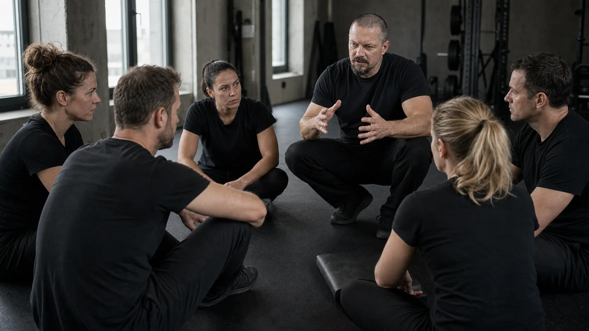
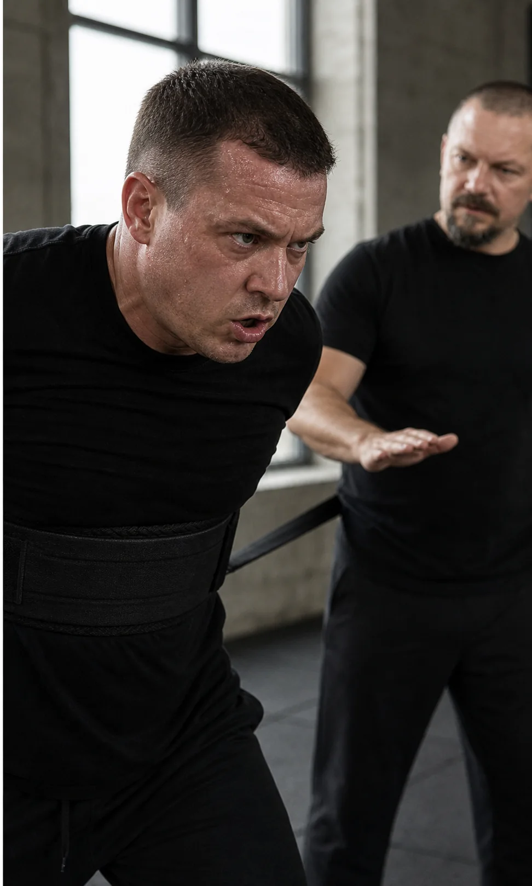

Ztuhnete nebo ustoupíte
Chcete se ozvat či nastavit hranici, ale v rozhodující chvíli se zastavíte.
Veřejný trénink pro jednotlivce · Praha · 21. 11. 2026
Praktický psychofyzický trénink pro situace, ve kterých ztuhnete, ustoupíte, ztratíte slova nebo reagujete prudčeji, než jste chtěli.
V bezpečně vedeném nácviku poznáte první signály své automatické reakce, naučíte se ji včas regulovat a získáte více prostoru pro vědomý další krok.
Cena za včasné přihlášení do 20. 10. 20263 900 Kč4 600 Kč

Co se během tréninku změní
Cílem není odstranit stres ani potlačit emoce. Cílem je rozpoznat změnu dříve, regulovat její další rozvoj a znovu získat přístup ke slovům, úsudku a volbě.
Všimnete si změny dechu, napětí, hlasu nebo pozornosti dřív, než reakce převezme řízení.
Použijete krátký postup, který vám pomůže regulovat zvýšenou aktivaci přímo v situaci.
Získáte prostor odpovědět, nastavit hranici, rozhodnout se, odejít nebo vědomě mlčet.
Odnesete si osobní plán pro okamžik, na kterém vám záleží.
Pro koho je trénink
Průběh dne
Krátká vysvětlení se střídají s praktickými cvičeními, bezpečně řízenými scénáři, zpětnou vazbou a opakováním.
Náročnost se zvyšuje postupně podle možností skupiny. Osobní sdílení není povinné.
Místo konání
Velká žlutá budova přímo za kostelem na Karlínském náměstí.
MHD: metro B/C Florenc nebo metro B Křižíkova
Tramvaj: zastávka Karlínské náměstí

Bezpečné a zkušené vedení
Důvěryhodnost psychofyzického tréninku nestojí jen na obsahu. Rozhoduje způsob, jakým lektor vytváří zátěž, sleduje reakce účastníků a udržuje respektující prostředí.
Přihláška na veřejný trénink
Vyplňte přihlášku. Na e-mail vám pošleme potvrzení, fakturu a organizační informace. Místo je závazně potvrzeno po úhradě.
Nejčastější otázky
Průběh, bezpečí, odborný základ i praktické informace k termínu 21. 11. 2026.
Pro dospělé, kteří v konfliktu, kritice, prezentaci, nejistotě nebo jiné náročné situaci někdy ztuhnou, ustoupí, ztratí slova nebo reagují prudčeji, než chtějí. Trénink není diagnostický ani léčebný program.
Ne. Nejde o sportovní výkon, boj ani fyzickou sebeobranu. Náročnost se zvyšuje postupně a přizpůsobuje možnostem skupiny. Řízená zátěž slouží k rozpoznání a nácviku reakce, nikoli k vyčerpání účastníků.
Výzkum podporuje výchozí mechanismy: akutní stres může zhoršovat pracovní paměť a kognitivní flexibilitu a ovlivňovat rozhodování. Výzkum stresového nácviku podporuje obecný princip postupné přípravy na výkon pod zátěží. Tyto práce ale nejsou přímým klinickým ověřením programu Resilium; Resilium je vlastní tréninkový rámec a negarantuje univerzální výsledek.Vybrané odborné zdroje: Shields, Sazma & Yonelinas (2016), Starcke & Brand (2012) a Saunders et al. (1996).
Ne. Resilium nenahrazuje psychoterapii, psychologickou diagnostiku ani zdravotní péči. Můžete pracovat s typem situace bez zveřejňování citlivého osobního obsahu; osobní sdílení není podmínkou účasti.
Pohodlné oblečení, pití a vše, co potřebujete na pauzu na oběd. Podrobné organizační informace obdržíte po potvrzení přihlášky.
Oběd není součástí ceny. Pauza proběhne od 12:00 do 13:00 a v okolí Karlínského náměstí je více možností stravování.
Při odeslání přihlášky nejpozději 20. 10. 2026 je cena 3 900 Kč. Rozhoduje datum odeslání přihlášky. Od 21. 10. 2026 je cena 4 600 Kč. Nejde o automatickou platbu; po potvrzení přihlášky obdržíte fakturu.
Po přijetí přihlášky vám pošleme potvrzení a fakturu. Místo je závazně potvrzeno po úhradě.